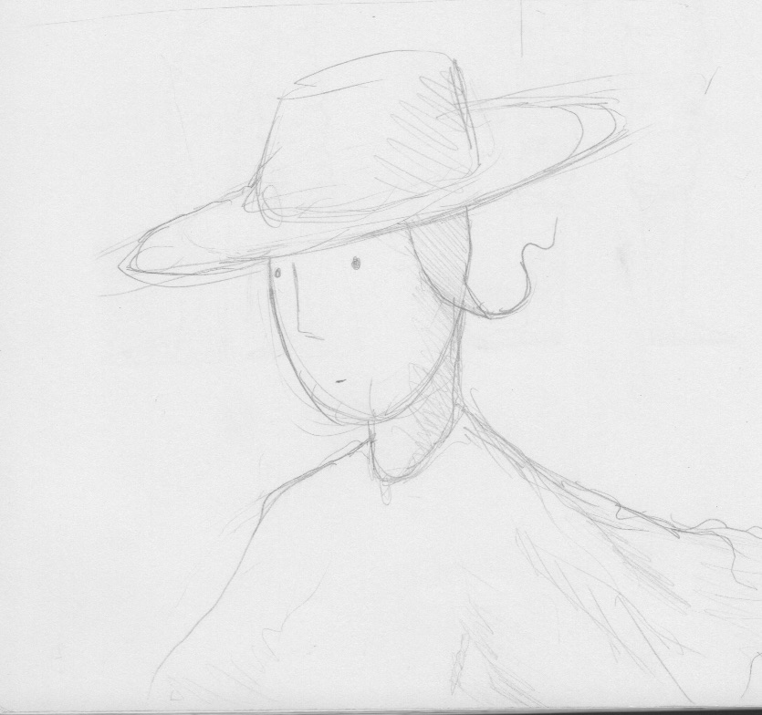

^Original image, sketch made in the winter of 2017.
^Character concept sketch, the idea was to add depth to the illustration, to tell a story within it.
^Character concept refinement, the design is based on pilgrims of North America
^Alien concept
^The cosmic egg, that the aliens and humans would trade. What for? Who knows.
^Further sketches to give an idea of what this floating road in space is. This is a birdhouse for the alien looking horses.

^One page of the Storyboard, this helped refine the story.
^Animation test sketch. Here you see the human and alien riding together. This sketch is to help me visualise the movement of the alien-horse.

^First animation test, done in Adobe Flash.

^Animation transferred to paper. Done with ink pens to test how the final animation might look.

^Animation cycle of one of the hikers on the road. The diagonal lines are because all the characters in the scene are in an isometric view.

^Turtles walk cycle. Made in Flash.

^Hikers draft in Flash.
^Setting up the final shot at Swinburne University. Two reflected lights were used to create a soft shadow.

^All the pieces of the animation ready to go.

^Flag guy. Sadly, the flag came out quite jagged in the final shot.
^The pilgrim from earlier concepts.
^Turtle animation sheet and final form.

Turtle walk cycle ready to go.
^Original test shot to explore how editing might work.

^Unedited footage of final shot. Took around 6 hours to shoot. Whole setup took around a day.

^Final shot. Click to see the full 30 second video.